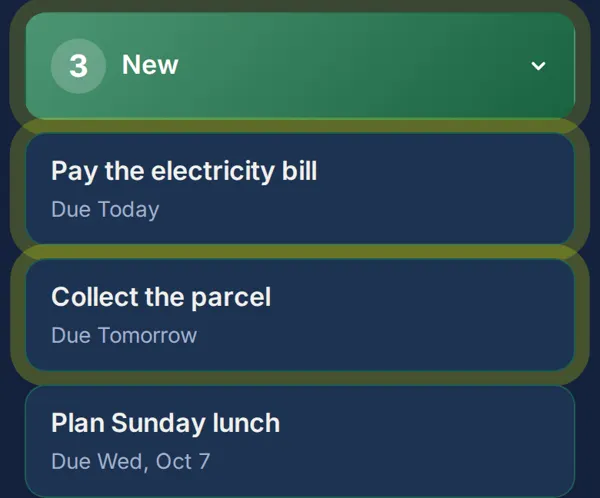
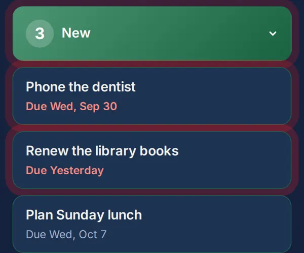

A simple reminder and to-do app with nothing extra
Looking for a simple reminder app? eazie keeps to one idea: write it down, see it, tick it off. Nothing else gets in the way.
Only what you need
- A title is the only thing required to add a task.
- Four plain statuses: New, Doing, Waiting, Done.
- A due date and time, if you want one.
- Repeats: daily, weekly, monthly or yearly.
- Notes, and a search box to find anything.
Nothing you don't
No accounts. No folders, tags or teams. No settings maze. No tutorial to sit through. When there is less on the screen, there is less to get wrong.
How eazie reminds you
Anything due today or tomorrow pulses gently, and anything overdue pulses red, so your eye goes straight to it. A repeating task moves to Done when you finish it, then returns on the day it is next due.


For work and for life
Switch between a Work view for jobs and a Personal view for everyday tasks. Personal tasks hide the business fields like job number and quote.
Common questions
Is eazie a reminder app or a to-do app?
Both, in the simplest form. It is a list that makes due things hard to miss.
Can I add a task in a few seconds?
Yes. Type a title and save. Everything else is optional.
Is there a lot to learn?
No. Every button is labelled in plain words.